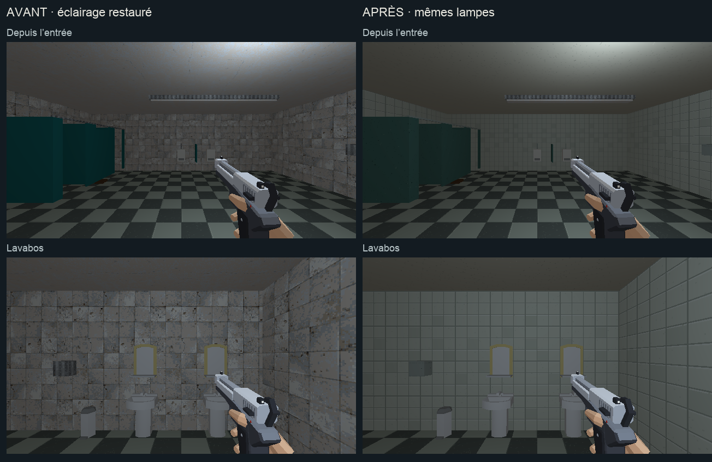
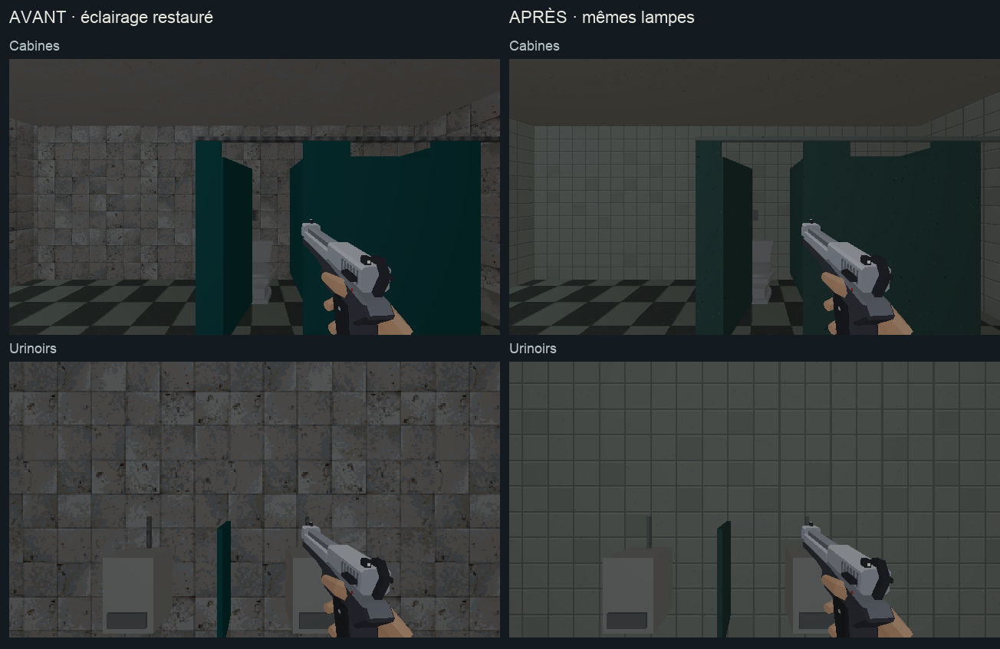
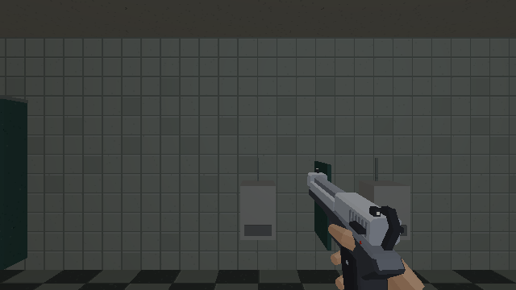

PROJET CASSANDRE · HARMONISATION · ÉTAPE 3
Sanitaires
Faïence ivoire, cabines vert pétrole et métal mat. Le damier partagé avec la cafétéria et les lampes sont conservés.
Étalon approuvé · Charte commune · Compte rendu de cette passe · Cafétéria
Chargement du magasin…
Les ennemis sont neutralisés pour comparer les surfaces. Clique dans le jeu pour parcourir les lieux ; Échap libère la souris.
Pose et équipement
En attente…
Avant et après
Mêmes poses et éclairage : seules les matières changent.

Mobilier et équipements

En marchant
